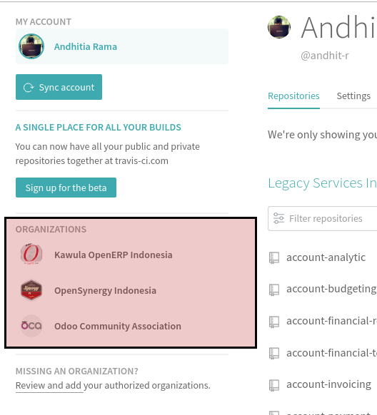

Development Tools
Docker
1. Buka Terminal
(Abaikan jika sudah berada di dalam terminal)
2. Install docker, docker.io, dan docker-compose
Sintaks:
sudo apt-get install docker docker.io docker-compose
Development Environment
Mempersiapkan Development Environment
1. Buka terminal
2. Clone repositori doodba scafolding
Sintaks untuk ssh:
git clone -b <versi-odoo> git@github.com:open-synergy/doodba-scaffolding.git <nama-folder-development>
Sintaks untuk https:
git clone -b <versi-odoo> https://github.com/open-synergy/doodba-scaffolding.git <nama-folder-development>
Keterangan:
- versi-odoo: versi Odoo yang akan didevelop. Contoh: 8.0, 9.0
- nama-folder-development: nama folder yang akan menampung hasil clone. Bebas.
3. Masuk ke dalam folder nama-folder-development
Sintaks:
cd <nama-folder>
4. Perbesar disk size untuk inotify
Sintaks:
echo 16384 | sudo tee /proc/sys/fs/inotify/max_user_watches
5. chmod folder odoo/auto
Sintaks:
chmod -R ug+rwX odoo/auto
6. Sesuaikan environment variable UID dan GID
Sintaks:
export UID GID="$(id -g $USER)" UMASK="$(umask)"
7. Pull dan build docker image yang akan digunakan
Sintaks:
sudo docker-compose -f devel.yaml build --pull
8. Jalankan git-aggregator untuk melakukan clone odoo, ocb, dan OpenUpgrade codebase
Sintaks:
sudo docker-compose -f setup-devel.yaml run --rm odoo
Menjalankan Odoo Aplication Service
1. Buka Terminal
(Abaikan jika terminal sudah dibuka)
2. Masuk ke dalam folder
Sintaks:
cd <nama-folder-development>
(Abaikan jika sudah berada di dalam
3. Cek apakah docker service sudah berjalan
Sintaks:
sudo docker-compose -f devel.yaml ps
Berikut adalah hasil yang akan ditampilkan jika docker service tidak berjalan

4. Jalankan docker service
Sintaks:
sudo docker-compose -f devel.yaml up
5. Buka Browser
Gunakan Google Chrome, Google Chromium, atau Mozilla Firefox
6. Buka URL Odoo
localhost:<versi-major-odoo>069
Keterangan:
- versi-major-odoo: versi odoo yang sedang didevelop. Contoh: untuk versi 12.0 port yang akan digunakan adalah 12069
Mendaftarkan Repositori Baru
1. Buka file /odoo/custom/src/repos.yaml
2. Daftarkan repositori
Tambahkan kode berikut:
<alias-repositori>:
defaults:
depth: $DEPTH_DEFAULT
remotes:
origin: <url-repositori>
target: origin $ODOO_VERSION
merges:
- origin $ODOO_VERSION
Keterangan (harus disesuaikan):
- alias-repositori: alias yang akan dipergunakan oleh repositori
- url-repositori: URL repositori. Dapat berbentuk SSH atau https
Contoh penambahan repositori OCA server tools dengan https:
oca-server-tools:
defaults:
depth: $DEPTH_DEFAULT
remotes:
upstream: https://github.com/OCA/server-tools.git
target: upstream $ODOO_VERSION
merges:
- upstream $ODOO_VERSION
Berikut adalah contoh kode:

3. Buka file /odoo/custom/src/addons.yaml
4. Tambahkan entri addons dari repo baru yang mau digunakan
Sintaks untuk menggunakan hanya sebagian modul dalam repo:
<alias-repositori>:
- <module-yang-akan-digunakan-1>
- <module-yang-akan-digunakan-2>
- ...
- <module-yang-akan-digunakan-n>
Sintaks untuk menggunakan semua modul dalam repositori
<alias-repositori>:
- "*"
Contoh untuk menggunakan beberapa modul di repo OCA server tools:
oca-server-tools:
- date_range
- shell
Contoh untuk menggunakan semua modul di repo OCA server tools:
oca-server-tools:
- "*"
Berikut adalah contoh kode:

5. Jalankan git-aggregator
Sintaks:
sudo docker-compose -f setup-devel.yaml run --rm odoo
6. Restart Container Odoo
Sintaks:
sudo docker-compose -f devel.yaml restart odoo
7. Update module list di Odoo
Modul-modul yang ada di addons.yaml akan tampil di daftar module
Github
Travis CI
Menambahkan Konfigurasi Travis Di Repo
1. Masuk ke dalam direktori repositori dengan menggunakan terminal
2. Copy file .travis.yml dari repo OCA/maintener-quality-tools.
Jalankan sintaks berikut di terminal
wget https://raw.githubusercontent.com/OCA/maintainer-quality-tools/master/sample_files/.travis.yml .
3. Add, commit, dan push .travis.yml
git add -A .travis.yml \
&& git commit -m "Add travis.yml" \
&& git push origin 12.0:12.0
Kode di atas mengasumsikan:
- Tidak ada branch protection rule yang aktif pada pengaturan branch di github.com
- Branch yang akan diberikan konfigurasi travis adalah branch 12.0
Silahkan lakukan penyesuaian yang diperlukan.
Mendaftarkan Repository Github Ke Travis
1. Buka travis-ci.org dan login dengan menggunakan Github.
Abaikan jika Anda sudah berada pada travis-ci.org
2. Klik profile picture Anda pada bagian atas-kanan halaman

3. Klik menu Setting yang muncul pada profile picture Anda

4. Klik tombol Sync account

5. Pindah ke halaman organisasi apabila Anda akan mendaftarkan repository milik organisasi. Abaikan langkah ini apabila Anda akan mendaftarkan repository milik pribadi.
Klik salah satu nama organisasi pada bagian Organizations

6. Aktifkan Repository
Aktifkan toogle yang berada pada bagian kanan nama repository yang Anda inginkan.

Unittest
Referensi:
- Odoo 8.0 Testing Modules
- Odoo 9.0 Testing Modules
- Odoo 10.0 Testing Modules
- Odoo 11.0 Testing Modules
- Odoo 12.0 Testing Modules
- Python 2 Unittest
- Python 3 Unittest
OpenUpgradeLib
Referensi: